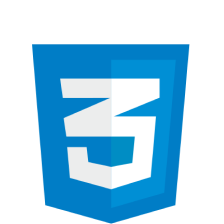
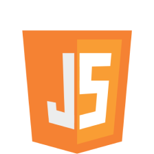

Por que me interessei pelo assunto?
Bom, surgiu uma oportunidade de comprar um curso de desenvolvimento web, então eu comprei e comecei a estudar, gostei bastante da área, pelo fato de poder construir aplicativos, interfaces, scripts e etc, afim de resolver problemas e facilitar o acesso a algumas informações, acredito que a área tem um enorme potencial e claro é algo que eu gosto de fazer, mas pretendo estudar para me tornar um desenvolvedor Web full stack
Linguagens as quais eu estudo
 A intenção desse site, é realmente de ser um portfólio, onde eu vou colocar imagens de meus projetos, esse por exemplo, é um slide feito em javascript puro, porém não tem os controles para retroceder ou avançar os slides, caso queira ver o código java script -->Script